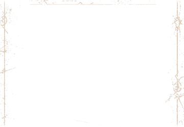
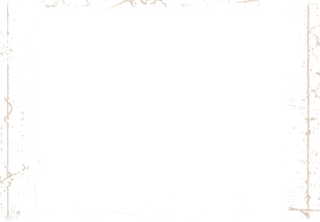

I
Photography
Visual places.
Different shadows.
The archive is taking shape.
La Likbør / Dark frame system
Continuous reference wear, quiet bronze edges and a restrained companion layer. Two subjects, one frame system.

I
Visual places.
Different shadows.
The archive is taking shape.

II
Garments, records
and selected pieces.
Explore the shop
The frame study uses text cards to inspect wear and spacing without introducing new photographs. Photography remains a preview; Collections opens the existing Shop.